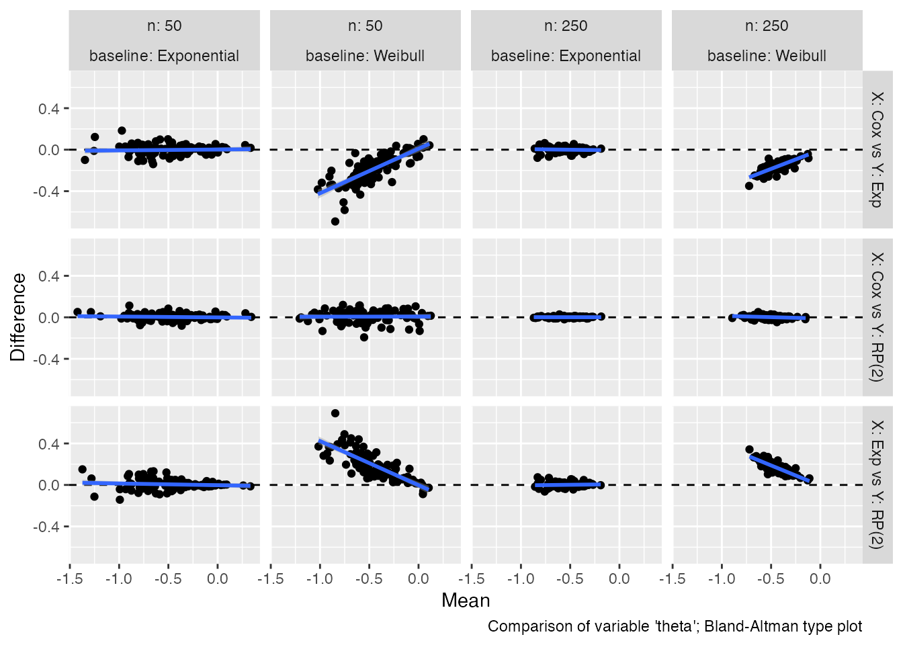
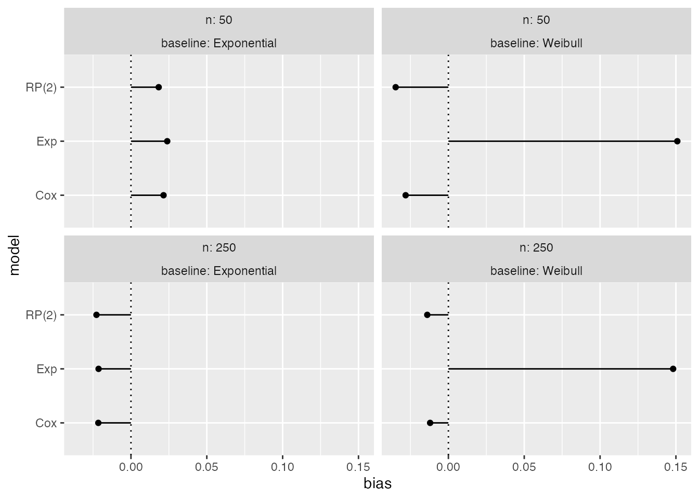
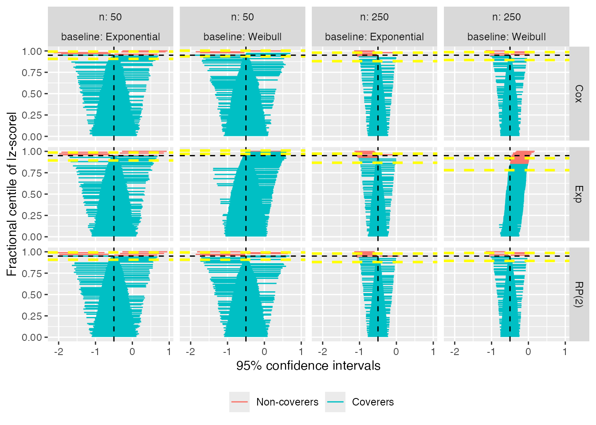
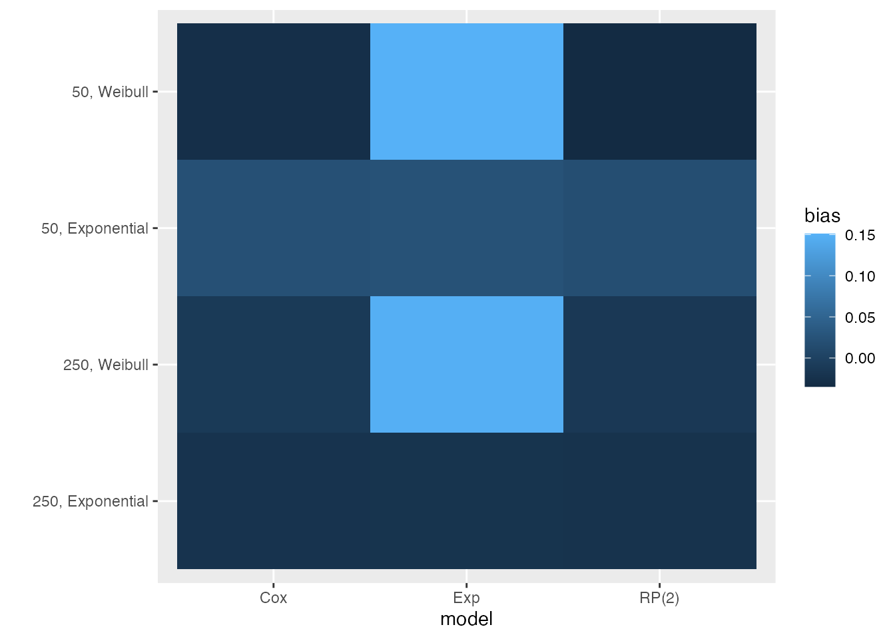
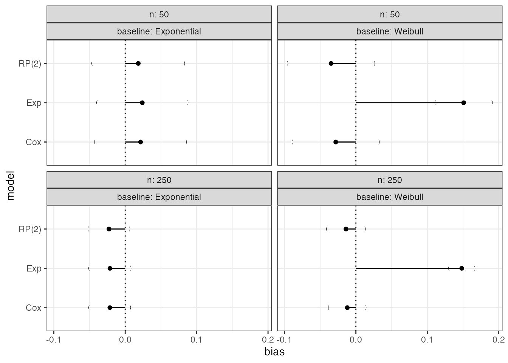
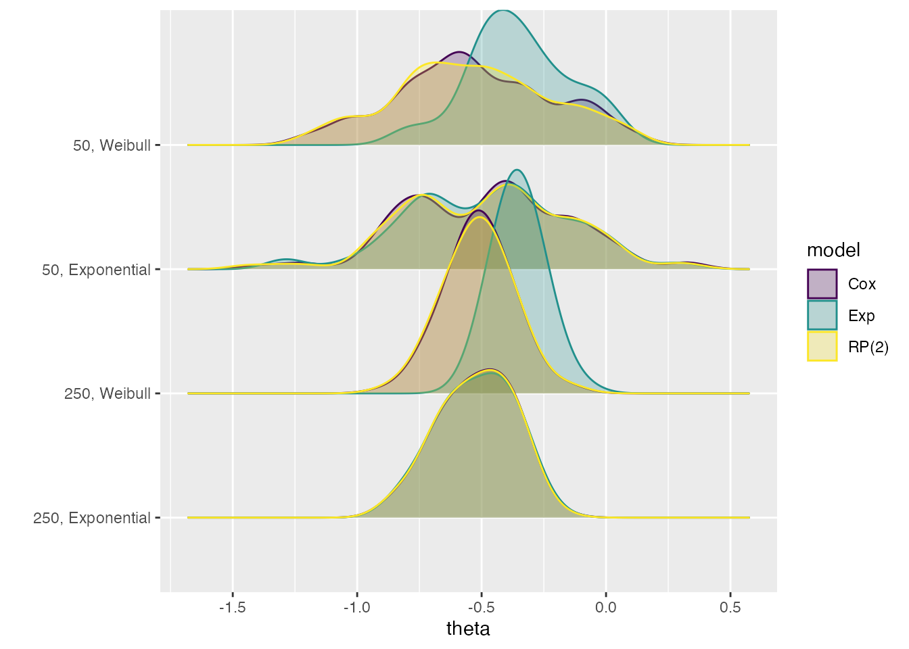

Visualising results from rsimsum
Alessandro Gasparini
2019-09-12
C-plotting.RmdThis vignette requires the following R packages:
Data
We use data from a simulation study on misspecification of the baseline hazard in survival models. This dataset is included in rsimsum and can be loaded with:
data("relhaz", package = "rsimsum")Inspecting the structure of the dataset and the first 15 rows of data:
str(relhaz)
#> 'data.frame': 1200 obs. of 6 variables:
#> $ dataset : int 1 2 3 4 5 6 7 8 9 10 ...
#> $ n : num 50 50 50 50 50 50 50 50 50 50 ...
#> $ baseline: chr "Exponential" "Exponential" "Exponential" "Exponential" ...
#> $ theta : num -0.88 -0.815 -0.143 -0.333 -0.483 ...
#> $ se : num 0.333 0.325 0.305 0.314 0.306 ...
#> $ model : chr "Cox" "Cox" "Cox" "Cox" ...
head(relhaz, n = 15)
#> dataset n baseline theta se model
#> 1 1 50 Exponential -0.88006151 0.3330172 Cox
#> 2 2 50 Exponential -0.81460242 0.3253010 Cox
#> 3 3 50 Exponential -0.14262887 0.3050516 Cox
#> 4 4 50 Exponential -0.33251820 0.3144033 Cox
#> 5 5 50 Exponential -0.48269940 0.3064726 Cox
#> 6 6 50 Exponential -0.03160756 0.3097203 Cox
#> 7 7 50 Exponential -0.23578090 0.3121350 Cox
#> 8 8 50 Exponential -0.05046332 0.3136058 Cox
#> 9 9 50 Exponential -0.22378715 0.3066037 Cox
#> 10 10 50 Exponential -0.45326446 0.3330173 Cox
#> 11 11 50 Exponential -0.71402510 0.3251902 Cox
#> 12 12 50 Exponential -0.32956944 0.3073481 Cox
#> 13 13 50 Exponential -0.15351788 0.3056453 Cox
#> 14 14 50 Exponential -0.82742207 0.3283561 Cox
#> 15 15 50 Exponential -0.14594648 0.3255636 CoxSummarise results
We use the simsum function to summarise results:
s1 <- simsum(
data = relhaz, estvarname = "theta", se = "se", true = -0.50,
methodvar = "model", by = c("n", "baseline"), x = TRUE
)
#> 'ref' method was not specified, Cox set as the reference
s1
#> Summary of a simulation study with a single estimand.
#>
#> Method variable: model
#> Unique methods: Cox, Exp, RP(2)
#> Reference method: Cox
#>
#> By factors: n, baseline
#>
#> Monte Carlo standard errors were computed.We call simsum with x = TRUE as that is required for some types of plots (e.g. zip plots, scatter plots, etc.).
summary(s1)
#> Values are:
#> Point Estimate (Monte Carlo Standard Error)
#>
#> Non-missing point estimates/standard errors:
#> n baseline Cox Exp RP(2)
#> 50 Exponential 100 100 100
#> 50 Weibull 100 100 100
#> 250 Exponential 100 100 100
#> 250 Weibull 100 100 100
#>
#> Average point estimate:
#> n baseline Cox Exp RP(2)
#> 50 Exponential -0.4785 -0.4761 -0.4817
#> 50 Weibull -0.5282 -0.3491 -0.5348
#> 250 Exponential -0.5215 -0.5214 -0.5227
#> 250 Weibull -0.5120 -0.3518 -0.5139
#>
#> Median point estimate:
#> n baseline Cox Exp RP(2)
#> 50 Exponential -0.4507 -0.4571 -0.4574
#> 50 Weibull -0.5518 -0.3615 -0.5425
#> 250 Exponential -0.5184 -0.5165 -0.5209
#> 250 Weibull -0.5145 -0.3633 -0.5078
#>
#> Bias in point estimate:
#> n baseline Cox Exp RP(2)
#> 50 Exponential 0.0215 (0.0328) 0.0239 (0.0326) 0.0183 (0.0331)
#> 50 Weibull -0.0282 (0.0311) 0.1509 (0.0204) -0.0348 (0.0311)
#> 250 Exponential -0.0215 (0.0149) -0.0214 (0.0151) -0.0227 (0.0149)
#> 250 Weibull -0.0120 (0.0133) 0.1482 (0.0093) -0.0139 (0.0137)
#>
#> Empirical standard error:
#> n baseline Cox Exp RP(2)
#> 50 Exponential 0.3285 (0.0233) 0.3258 (0.0232) 0.3312 (0.0235)
#> 50 Weibull 0.3115 (0.0221) 0.2041 (0.0145) 0.3111 (0.0221)
#> 250 Exponential 0.1488 (0.0106) 0.1506 (0.0107) 0.1489 (0.0106)
#> 250 Weibull 0.1333 (0.0095) 0.0929 (0.0066) 0.1368 (0.0097)
#>
#> % gain in precision relative to method Cox:
#> n baseline Cox Exp RP(2)
#> 50 Exponential -0.0000 (0.0000) 1.6773 (3.2902) -1.6228 (1.7887)
#> 50 Weibull -0.0000 (0.0000) 132.7958 (16.4433) 0.2412 (3.7361)
#> 250 Exponential 0.0000 (0.0000) -2.3839 (3.0501) -0.1491 (0.9916)
#> 250 Weibull -0.0000 (0.0000) 105.8426 (12.4932) -4.9519 (2.0647)
#>
#> Mean squared error:
#> n baseline Cox Exp RP(2)
#> 50 Exponential 0.1073 (0.0149) 0.1056 (0.0146) 0.1089 (0.0154)
#> 50 Weibull 0.0968 (0.0117) 0.0640 (0.0083) 0.0970 (0.0117)
#> 250 Exponential 0.0224 (0.0028) 0.0229 (0.0028) 0.0225 (0.0028)
#> 250 Weibull 0.0177 (0.0027) 0.0305 (0.0033) 0.0187 (0.0028)
#>
#> Model-based standard error:
#> n baseline Cox Exp RP(2)
#> 50 Exponential 0.3185 (0.0013) 0.3127 (0.0010) 0.3165 (0.0012)
#> 50 Weibull 0.3052 (0.0014) 0.2888 (0.0005) 0.2996 (0.0012)
#> 250 Exponential 0.1396 (0.0002) 0.1381 (0.0002) 0.1394 (0.0002)
#> 250 Weibull 0.1320 (0.0002) 0.1281 (0.0001) 0.1313 (0.0002)
#>
#> Relative % error in standard error:
#> n baseline Cox Exp RP(2)
#> 50 Exponential -3.0493 (6.8838) -4.0156 (6.8114) -4.4305 (6.7842)
#> 50 Weibull -2.0115 (6.9601) 41.4993 (10.0341) -3.6873 (6.8377)
#> 250 Exponential -6.2002 (6.6512) -8.3339 (6.4996) -6.4133 (6.6361)
#> 250 Weibull -0.9728 (7.0220) 37.7762 (9.7671) -4.0191 (6.8057)
#>
#> Coverage of nominal 95% confidence interval:
#> n baseline Cox Exp RP(2)
#> 50 Exponential 0.9500 (0.0218) 0.9400 (0.0237) 0.9500 (0.0218)
#> 50 Weibull 0.9700 (0.0171) 0.9900 (0.0099) 0.9500 (0.0218)
#> 250 Exponential 0.9300 (0.0255) 0.9200 (0.0271) 0.9300 (0.0255)
#> 250 Weibull 0.9400 (0.0237) 0.8500 (0.0357) 0.9400 (0.0237)
#>
#> Bias-eliminated coverage of nominal 95% confidence interval:
#> n baseline Cox Exp RP(2)
#> 50 Exponential 0.9500 (0.0218) 0.9500 (0.0218) 0.9500 (0.0218)
#> 50 Weibull 0.9500 (0.0218) 1.0000 (0.0000) 0.9500 (0.0218)
#> 250 Exponential 0.9400 (0.0237) 0.9400 (0.0237) 0.9400 (0.0237)
#> 250 Weibull 0.9500 (0.0218) 0.9900 (0.0099) 0.9400 (0.0237)
#>
#> Power of 5% level test:
#> n baseline Cox Exp RP(2)
#> 50 Exponential 0.3600 (0.0480) 0.3800 (0.0485) 0.3700 (0.0483)
#> 50 Weibull 0.4300 (0.0495) 0.0900 (0.0286) 0.4700 (0.0499)
#> 250 Exponential 0.9800 (0.0140) 0.9900 (0.0099) 0.9900 (0.0099)
#> 250 Weibull 0.9700 (0.0171) 0.8600 (0.0347) 0.9700 (0.0171)rsimsum implements the autoplot method for objects of classes: simsum, summary.simsum, multisimsum, summary.multisimsum.
See ?ggplot2::autoplot() for details on the S3 generic function.
Scatter plots
Scatter plots allow to assess serial trends in estimates and standard errors.
For instance, if we want to compare the point estimates from different methods (across data-generating mechanisms):
autoplot(s1, type = "est")Analogously, if we want to compare standard errors:
autoplot(s1, type = "se")These two plot types allow comparing estimates (and standard errors) obtained from different methods with ease; in ideal settings, the points of the scatterplots should lay on the diagonal (dashed line). An estimated regression line (of X vs Y, blue line) is superimposed by default to ease the comparison even more.
In addition to plots comparing estimates and standard errors, Bland-Altman-type plots are supported as well:
autoplot(s1, type = "est_ba")
Bland-Altman plots compare the difference between estimates from two competing methods (on the y-axis) with the mean of the estimates from the two methods (x-axis). In the ideal scenario, there should be no trend and all the points from the scatter plot should lay around the horizontal dashed line. To ease comparison, a regression line is included here as well. Bland-Altman plots for standard errors could be obtained by setting the argument type = "se_ba".
Ridgeline plots
Another way of visually comparing estimates from different methods is given by ridgeline plots. According to the documentation of the ggridges package (source),
Ridgeline plots are partially overlapping line plots that create the impression of a mountain range. They can be quite useful for visualizing changes in distributions over time or space.
In the settings of simulation studies, we aim to visualise changes in distribution over data-generating mechanisms.
For instance, say we want to compare estimates across data-generating mechanisms and methods:
autoplot(s1, type = "est_ridge")
#> Picking joint bandwidth of 0.077This allows us to see how the estimates from the Exp method are different from the other methods in two of the four data-generating mechanisms: 50, Weibull and 250, Weibull.
To obtain a similar plot for standard errors, call the autoplot method with type = "se_ridge instead.
Lolly plots
Lolly plots are used to present estimates for a given summary statistic with confidence intervals based on Monte Carlo standard errors (if calling the autoplot method on summary objects). They allow to easily compare methods.
Say we are interested in bias:

It is straightforward to identify the exponential model as yielding biased results when the true baseline hazard is Weibull, irrespectively of the sample size.
If confidence intervals based on Monte Carlo errors are not required, it is sufficient to call the autoplot method on the simsum object:
autoplot(s1, type = "lolly", stats = "bias")
Analogously, for coverage:
Forest plots
Forest plots could be an alternative to lolly plots, with similar interpretation:
autoplot(s1, type = "forest", stats = "bias")Zipper plots
Zipper plots (or zip plots), introduced in Morris et al. (2019), help understand coverage by visualising the confidence intervals directly. For each data-generating mechanism and method, the confidence intervals are centile-ranked according to their significance against the null hypothesis \(H_0: \theta = \theta_{\text{true}}\), assessed via a Wald-type test. This ranking is used for the vertical axis and is plotted against the intervals themselves.
When a method has \(95\%\) coverage, the colour of the intervals switches at 95 on the vertical axis. Finally, the horizontal lines represent confidence intervals for the estimated coverage based on Monte Carlo standard errors.
autoplot(s1, type = "zip")
The zipper plot for the exponential model with \(n = 50\) and a true Weibull baseline hazard shows that coverage is approximately \(95\%\); however, there are more intervals to the right of \(\theta = -0.50\) than to the left: this indicates that the model standard errors must be overestimating the empirical standard error, because coverage is appropriate despite bias.
Heat plots
Heat plots are a new visualisation that we suggest and include here for the first time. With heat plots, we produce a heat-map-like plot where the filling of each tile represents a given summary statistic, say bias:
autoplot(s1, type = "heat", stats = "bias")
This visualisation type automatically puts all data-generating mechanisms on the y-axis; by default, the methods are included on the x axis. Therefore, this plot is most useful when a simulation study includes different methods to be compared and many data-generating mechanisms. Using a heat plot, it is immediate to identify visually which method performs better and under which data-generating mechanisms.
By default, heat plots use the default ggplot scale for the filling aesthetic. It is recommended to use a different colour palette with better characteristics, e.g. the viridis colour palette from matplotlib; see the next section for details on how to do this, and here for details on the viridis colour palette.
Custom plotting
All plots produced by rsimsum are meant to be quick explorations of results from Monte Carlo simulation studies: they are not meant to be final manuscript-like-quality plots (although they can be useful as a starting point).
Generally, the output of all types of autoplot calls are ggplot objects; hence, it should be generally straightforward to customise all plots. For instance, say we want to add a custom theme:

Compare to the default plot:
We also mentioned before that the colour palette of heat plots should be customised. Say we want to use the default viridis colour palette:
autoplot(s1, type = "heat", stats = "bias") +
viridis::scale_fill_viridis()Analogously, say we want to customise the colour palette of ridgelines plots, again using the viridis colour palette:
autoplot(s1, type = "est_ridge") +
viridis::scale_fill_viridis(discrete = TRUE) +
viridis::scale_colour_viridis(discrete = TRUE)
#> Picking joint bandwidth of 0.077